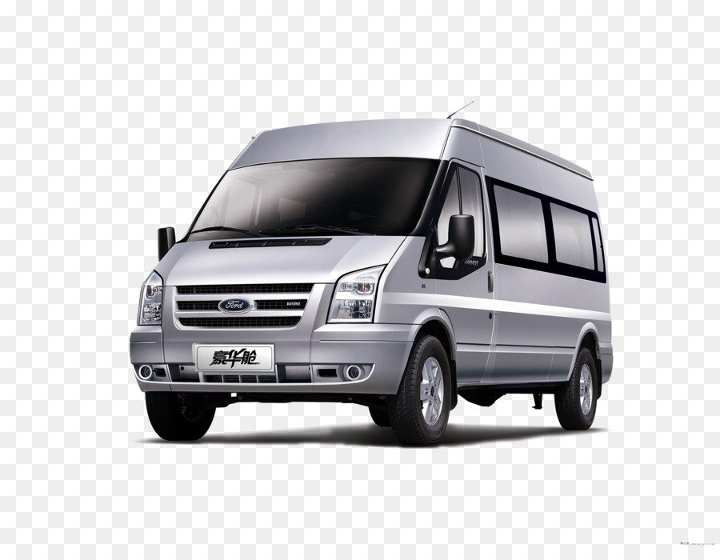
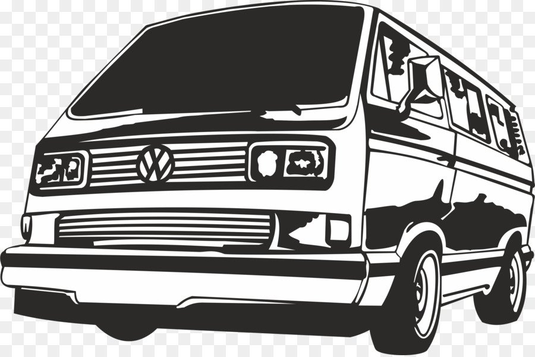
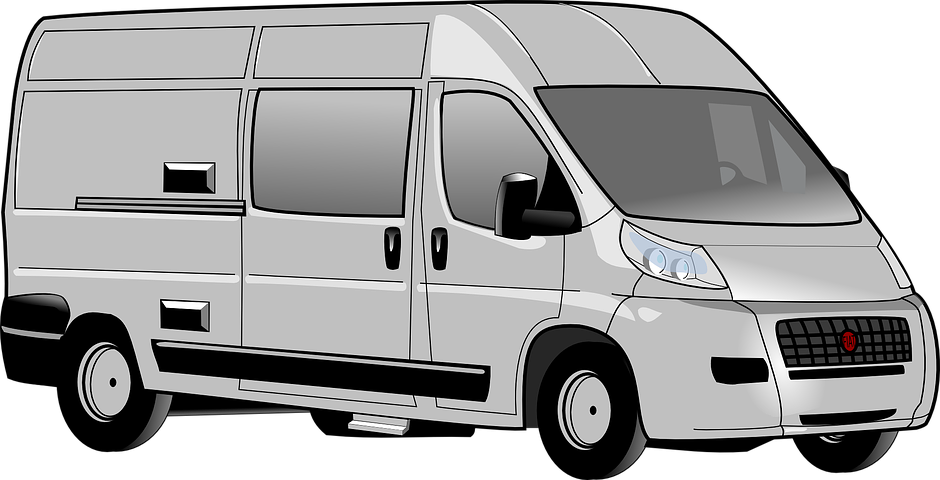
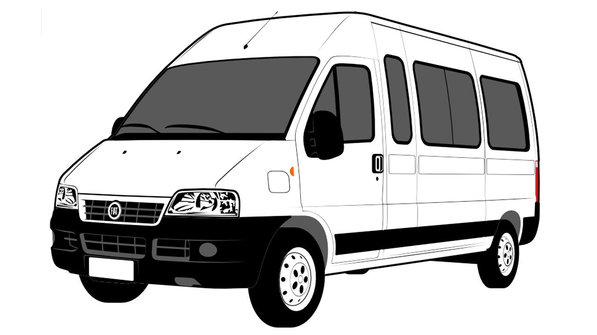
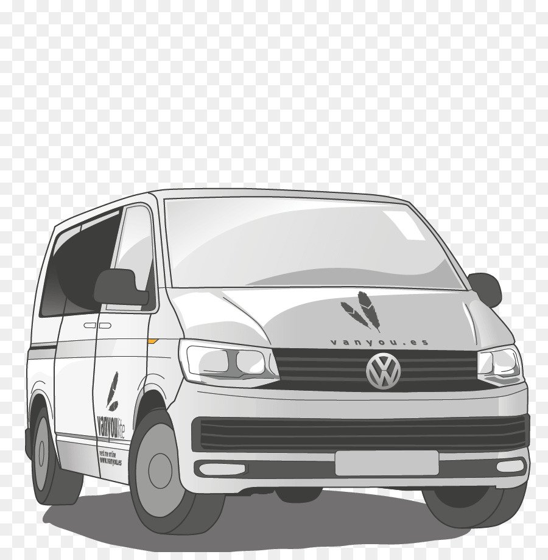
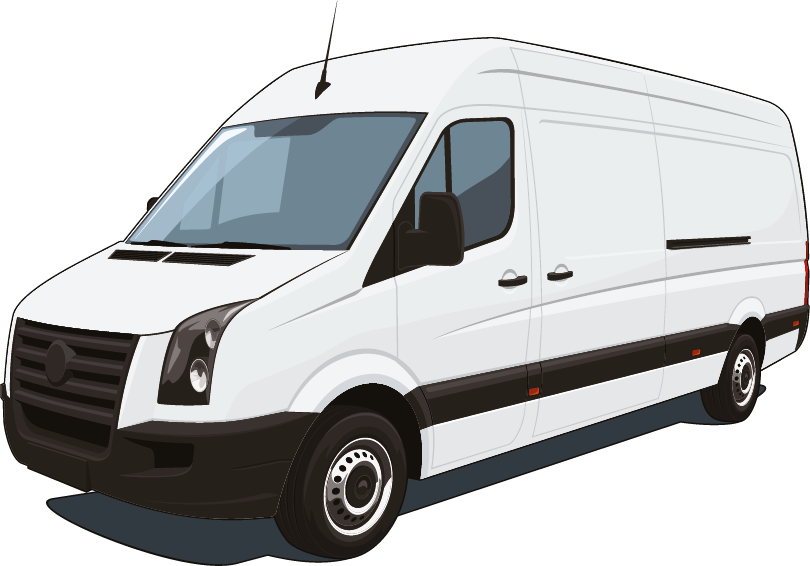

|  |  |  |  |  |  |
Машина вона як жінка. Справа не в тому, скільки вона їсть, а в тому, скільки приносити задоволення!
Види і марки мікроавтобусів
Мікроавтобус – транспортний засіб особливо малого класу (довжина – до 5 метрів), який широко використовується як для перевезення невеликих груп пасажирів, так для транспортування малогабаритних вантажів. До речі, до лав мікроавтобусів багато хто часто записує і мінівени. Хоча цей вид транспорту для комерційних пасажироперевезень чи транспортування вантажів не використовують. Хіба що лише у службах таксі.
Наразі мікроавтобуси поділяються на пасажирські, вантажопасажирські та вантажні. Популярність мікроавтобусів у сфері пасажирських перевезень пояснюється тим, що, незважаючи на відносно невеликий розмір, такий вид техніки вміщує досить велику кількість людей (в середньому, від 8 осіб, якщо не брати до уваги водія). Якщо говорити про особливості конструкції, то слід зазначити, що в більшості випадків кузов встановлюється на шасі вантажних автомобілів малого класу або на "легкові" шасі. Народну любов маршрутні таксі (а саме для пасажирських перевезень в даному випадку використовуються мікроавтобуси) завоювали завдяки комфортним сидінням, просторому салону та ще безлічі "гаджетів", які виробники даного виду техніки встановлюють у салоні. Наприклад, у багатьох маршрутках є РК-монітори, на яких транслюються інофільми або інша корисна інформація, кондиціонери, підсвічування в салоні, часто в салоні є місце для ручної поклажі. Крім цього, пасажирські сидіння в салоні мікроавтобуса можна демонтувати, перетворивши таким чином транспортний засіб із пасажирського на вантажний. Ще однією конструкторською особливістю цього виду транспортних засобів є наявність розсувних бічних або розстібних задніх дверей. Мікроавтобуси, які застосовуються для вантажних перевезень, широко використовуються у торгівлі, а також для перевезення різних вантажів у межах населеного пункту. У лінійці мікроавтобусів для вантажоперевезень можна виділити такі види техніки: ізотермічний, мікроавтобус-рефрижератор та мікроавтобус-фургон. По вантажопідйомності мікроавтобуси можна розділити на особливо малотоннажні та малотоннажні. У першому випадку вантажопідйомність мікроавтобуса буде близько 1 тонни. Малотоннажний мікроавтобус здатний витримати вантаж масою до 3 тонн.
Виробники подбали і про те, щоб експлуатація цього виду техніки була якомога більш ефективною та економічно вигідною. Тому зараз практично на всі мікроавтобуси встановлюються дизельні двигуни.
На сьогоднішній день практично не залишилося жодної компанії, що займається виробництвом автомобільної техніки, в лінійці якої не було б мікроавтобусів для пасажирських перевезень або транспортування вантажу. Найбільшою популярністю користуються мікроавтобуси MercedesBenz, Volksvagen, Ford, Iveco, Renault і т.д.
Що ми пропонуємо?
- широкий асортимент
- вигідні ціни
- гнучку систему знижок
- оформлення кредиту
- дообладнання авто під ваші потреби
- гарантія та сервісне обслуговування
- оригінальні запчастини